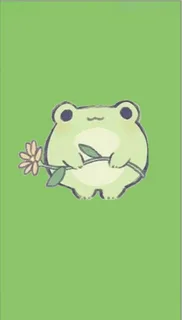
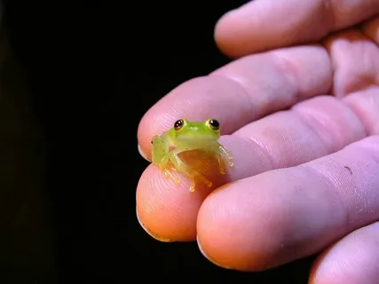
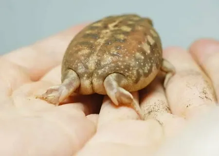

вид мелких лягушек из семейства узкороты, или микроквакши (Microhylidae). Являются одними из самых маленьких позвоночных в мире[1]. Длина взрослой особи составляет всего 7—8 миллиметров. Эндемики Папуа-Новой Гвинеи. Обитают в подстилочном слое среди опавшей листвы[2].
  Окраска в основном коричневая с нерегулярными ржаво-бурыми и беловато-голубыми отметинами (спинная поверхность тёмно-коричневая, а цвет боковых и брюшной частей тела от коричневой до синевато-серой). Для обитающих в лесной подстилке тропических лесов лягушек такая пятнисто-коричневая окраска служит хорошим камуфляжем. Длина взрослой особи равна в среднем 7,7 миллиметра. Как и другие представители рода, этот вид характеризуется редуцированным числом фаланг пальцев и числом пресакральных позвонков (их только 7).